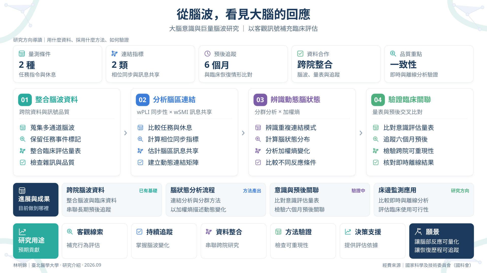

從腦波，看見大腦的回應
研究摘要 / Abstract
腦損傷後，有些病人無法以動作或言語回應，但這不一定代表大腦沒有反應。臨床評估多倚賴外在行為，可能漏掉部分訊號。我們想知道，腦波能否提供可量化、可追蹤的線索，補充床邊評估。
研究團隊整合跨院腦波、臨床評估與長期追蹤資料，建立大型資料庫，同時保留事件標記與訊號品質資訊，供後續分析使用。分析上，比較病人接受動作指令與休息時的多通道腦波，計算腦區之間的功能連結，再辨識重複出現的連結模式，描述腦狀態的動態變化與複雜程度。
目前重點在方法學驗證：檢視這些指標與意識評估量表的關聯、對六個月預後的預測能力，以及即時與離線分析是否一致，並確認結果能否跨病人、跨院重現。腦波指標不會直接判定意識，長期目標是成為可持續追蹤的床邊監測與臨床決策的輔助依據。


內容依據：2026-06｜ICU 腦損傷病人意識監測及預後決策支援系統考評簡報；2026｜動態腦電圖連結分析量化大腦意識之方法學驗證計畫；Methods: Brain State Entropy Pipeline